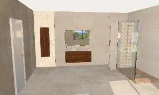

Choisissez un meuble, comparez ses finitions et replacez votre composition dans une pièce. Les deux ateliers RANDAL de LE ROY FACTORY relient le choix du mobilier à la visualisation de la salle de bains.
Studio One s’adresse aux projets de mobilier sur mesure de cette gamme. Le Catalogue Général propose les collections RANDAL intégrées à son propre catalogue. Le choix dépend d’abord du meuble souhaité ; les deux ateliers permettent ensuite de travailler son implantation et les matières de la pièce.
Studio One
Configurer un meuble de salle de bains sur mesure
Explorez les dimensions et les finitions disponibles, puis associez plan, vasque, miroir ou colonne. Contrôlez la composition dans la pièce avant de présenter votre projet à votre interlocuteur commercial.

Composition de démonstration de l’atelier Studio One. Cette image illustre un projet numérique, sans désigner un chantier réalisé.Entrer dans Studio One
Catalogue Général
Partir d’une collection RANDAL
Parcourez les modèles et les matières proposés dans le Catalogue Général. Ajustez les choix disponibles pour la collection retenue, puis visualisez meubles, vasques, miroirs et colonnes dans votre aménagement.
Travaillez les associations de meubles, plans, vasques, miroirs et rangements proposées par l’atelier. Les dimensions et les options restent liées au modèle sélectionné.
Simulation de carrelage en 3D
Comparez les revêtements disponibles pour les murs et le sol. Retrouvez notamment les collections de carrelage intégrées des fabricants Elios et VIEW, selon leur présence dans l’outil.
Lecture de l’espace
Vérifiez l’implantation grâce aux vues du projet et à la visite 3D. Ajustez l’ambiance lumineuse et les matières pour expliquer plus facilement vos choix.
Préparez les dimensions. Relevez les longueurs utiles, les ouvertures et les emplacements des équipements. Un plan coté facilite le contrôle de l’implantation.
Ouvrez l’atelier adapté. Choisissez Studio One pour cette gamme sur mesure, ou le Catalogue Général pour ses collections. Commencez un projet et vérifiez les dimensions de la pièce.
Composez le mobilier. Sélectionnez un modèle puis ses options disponibles. Contrôlez l’encombrement et l’association entre meuble, plan, vasque et miroir.
Comparez les revêtements. Essayez les carrelages intégrés, le sens de pose et les joints. Observez l’ensemble sous plusieurs angles dans la vue 3D.
Enregistrez et faites valider. Utilisez les fonctions d’enregistrement de l’atelier. Présentez les choix et les mesures au professionnel chargé de la fourniture ou de la réalisation.
Conception de salle de bains 3D à Montpellier, Castelnau-le-Lez et Vendargues
Vous préparez une rénovation ou un nouvel aménagement dans le secteur montpelliérain ? Les ateliers RANDAL vous permettent de composer votre salle de bains en ligne, puis d’échanger avec un professionnel à partir des dimensions, du mobilier et des matières que vous avez retenus.
Préparer votre projet avant un rendez-vous
Relevez les dimensions de la pièce, la position des portes et des fenêtres, puis comparez l’implantation d’un meuble, de sa vasque et du miroir. Notez les références et les finitions pour les faire vérifier. Si vous êtes un particulier, l’agence peut vous orienter vers un négoce partenaire.
Présenter un aménagement à vos clients
Négoces, architectes et artisans : utilisez le projet numérique pour expliquer l’encombrement du mobilier, les associations de carrelage et les options de la collection. Pour une prise en main avec votre équipe, demandez une démonstration en précisant votre activité, votre commune et l’atelier souhaité.
L’accompagnement commercial concerne nos secteurs en Languedoc et en PACA. Les rendez-vous s’organisent selon le fabricant, le lieu du projet et les disponibilités de l’équipe. Les ateliers sont accessibles en ligne également depuis les autres régions ; précisez votre commune pour vérifier les possibilités de conseil ou d’orientation.
Les ateliers s’ouvrent dans le navigateur depuis les boutons de cette page. L’interface 3D nécessite JavaScript et un navigateur capable de l’afficher. Sur un appareil modeste, commencez par le profil de qualité le plus léger disponible.
Puis-je utiliser les configurateurs en espagnol ?
Les deux ateliers RANDAL proposent le choix entre le français et l’espagnol. Sélectionnez la langue à l’ouverture de l’outil.
Le rendu 3D correspond-il exactement au produit livré ?
Le rendu aide à comparer les volumes et les associations. L’écran, l’éclairage et la texture numérique peuvent modifier la perception d’une couleur. Confirmez la finition et les dimensions avec les documents fabricant et, si possible, un échantillon.
Comment obtenir de l’aide pour un projet professionnel ?
Contactez LE ROY FACTORY pour une présentation des ateliers ou pour vérifier les références de votre composition. L’agence accompagne les négoces, les professionnels de la salle de bains et les prescripteurs en Languedoc et PACA.
Puis-je concevoir ma salle de bains depuis un autre département ?
Oui, les configurateurs sont des outils en ligne : vous pouvez préparer votre pièce et comparer les compositions depuis votre navigateur. Pour une démonstration, un conseil sur une référence ou une mise en relation commerciale, indiquez le lieu du projet à l’agence afin de vérifier les possibilités d’accompagnement.
Le plan 3D remplace-t-il les mesures et le devis d’un professionnel ?
Le projet numérique sert à préparer et à expliquer vos choix. Les mesures sur place, les contraintes de plomberie, les dimensions des produits et le devis restent à valider avec les professionnels concernés avant commande et réalisation.